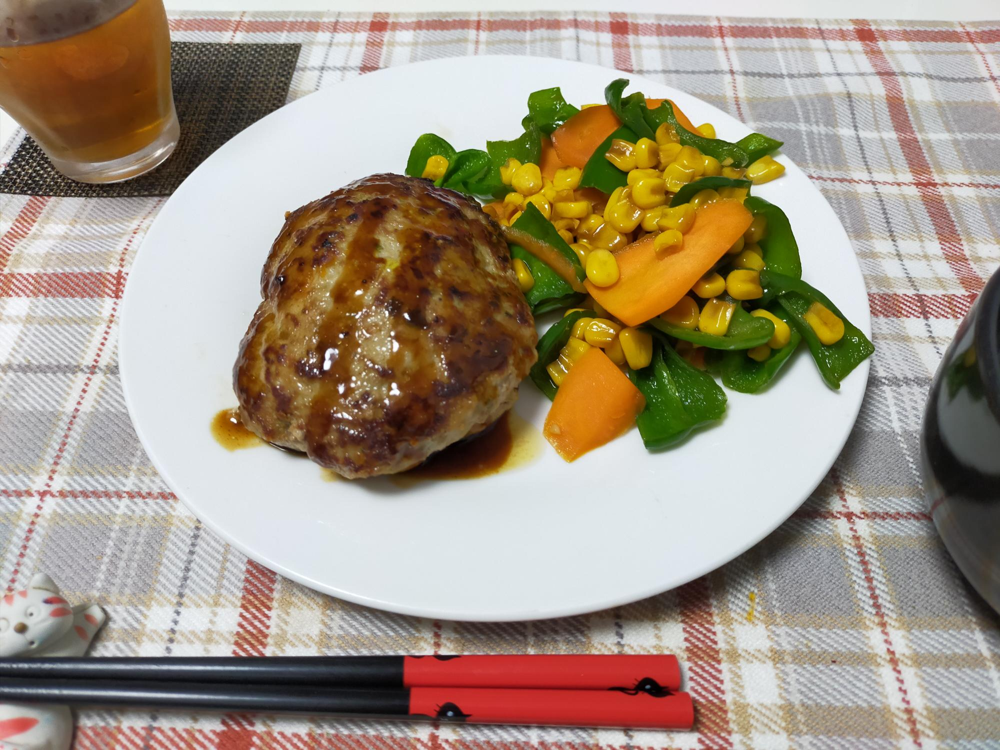

ハンバーグ
材料・金額
| 材料 | 購入金額 | 使用量 | 金額 | kcal |
|---|---|---|---|---|
| ハンバーグ | ||||
| 炒め野菜ベース ×0.25 |
- | - | 58 | 170 |
| 合挽肉950g | 1,115 | 300g | 352 | 777 |
| 卵1pac | 192 | 1個 | 19 | 76 |
| 塩コショウ ナツメグ |
- | 少々 | - | - |
| ☆パン粉 | - | 大3 | - | 45 |
| ☆スキムミルク | - | 大1 | - | 22 |
| ☆水 | - | 大3 | - | - |
| バター | - | 大1/2 | - | 45 |
| 中濃ソース | - | 大2 | - | 44 |
| ケチャップ | - | 大1 | - | 18 |
| 小計 | - | - | 429 | 1,197 |
| 野菜の付け合わせ | ||||
| にんじん5本 | 160 | 1本 | 32 | 39 |
| コーン缶3缶入 | 305 | 1缶 | 102 | 95 |
| ピーマン1袋（10個入） | 214 | 5個200g | 107 | 38 |
| だし醬油 | - | 大1 | - | 13 |
| みりん | - | 大1 | - | 41 |
| バター | - | 大1/2 | - | 45 |
| 小計 | - | - | 241 | 271 |
| 合計 | - | - | 670 | 1,468 |
| 1人分（合計×0.5） | - | - | 335 | 734 |
作り方
ハンバーグ
- ☆を混ぜ合わせておく
- ハンバーグの材料（バター、中濃ソース、ケチャップ以外）をボウルに入れてよく混ぜる
- 2等分にして、小判型にまとめてフライパンにバターを溶かし、弱火でフタをして両面じっくり焼く
- 皿に盛り、ソースケチャップを添える
野菜の付け合わせ
- にんじんは薄切り、コーンはザルにあげて水を切り、ピーマンは一口大に切っておく。
- バターの半量をフライパン入れ、フライパンを中火にかけ、フライパンが温まったら、野菜をいれる
- 野菜に焦げ目がついてきたら、だし醤油、みりんを入れて炒める
- 最後にバター半量を入れてざっと全体を混ぜ、ハンバーグの横にもりつけてできあがり
振り返り
炒め野菜ベースを作るのは面倒です。まずは、みじん切り、さらに炒めるのにも時間がかかります。なので、作るときは大量に作って、ほかの料理にも活用します。家の物を増やしたくなくて、フードプロセッサー等を買う事はためらってしまいますが、時間短縮にはいいのかもしれません。
あと、うちは牛乳を常備していません。その代わりと言ってはなんですが、スキムミルクは常備しています。毎朝コーヒーミルクの代わりにコーヒーに入れたり、毎週末パンを焼くのに使ったりしています。
独特の香りがしますが、すっかり慣れました。牛乳より長持ちするのが便利です。